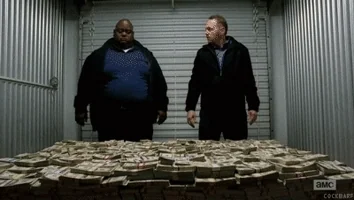

Season 5 (2012–13)
On August 14, 2011, AMC announced that Breaking Bad was renewed for a fifth and final season consisting of 16 episodes. Season five is split into two parts, each consisting of 8 episodes. The first half premiered on July 15, 2012, while the second half premiered on August 11, 2013. In August 2013, AMC released a trailer promoting the premiere of final season with Bryan Cranston reading the poem "Ozymandias" by Percy Bysshe Shelley, over timelapse shots of Breaking Bad locations.After Gus' death, Walt, Jesse, and Mike start a new meth business. When their accomplice Todd kills a child witness during a methylamine theft, Jesse and Mike sell their share of the methylamine to Declan, another distributor. Walter produces meth for Declan, and Gus' former associate Lydia starts distribution in Europe, which is so successful that Walter earns US$80 million, which he buries on the Tohajiilee Indian Reservation. After Walter kills Mike during an argument, he is given names of Mike's imprisoned men from Lydia. Walt hires Todd's uncle, Jack, and his gang to kill Mike's associates; they also kill Declan.
Hank discovers Walt is Heisenberg and begins gathering evidence. He turns to Jesse, who helps track Walt's money to the reservation. When Walt is arrested, Jack's gang arrives. They kill Hank, capture Jesse, and take most of Walt's money. Walt is forced to flee alone with the remaining money. After months in hiding, Walt plans to surrender but changes course after Elliott and Gretchen publicly minimize his involvement in starting Gray Matter. Walt manipulates Elliott and Gretchen to give his earnings to Walter Jr. After poisoning Lydia, Walt makes amends with Skyler over his criminality, and frees Jesse from Jack's compound before succumbing to wounds sustained from a shootout. 